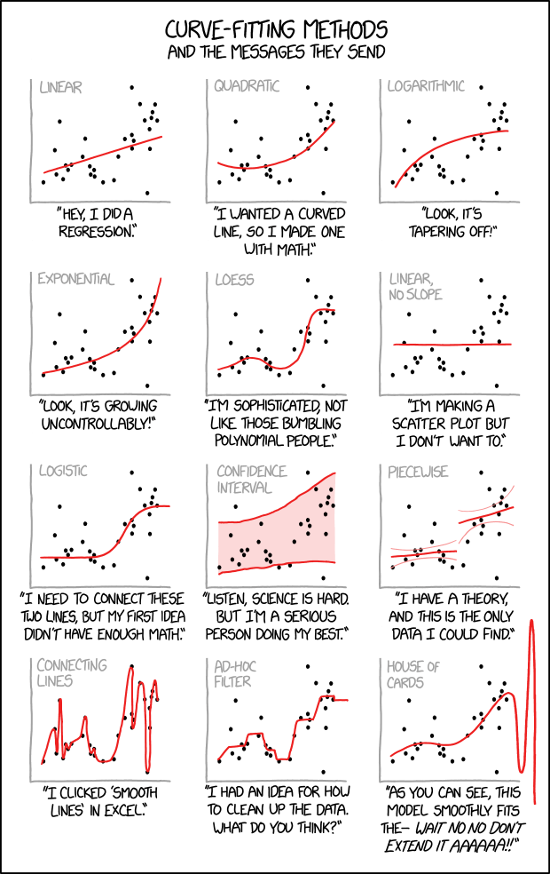

Statistiques et analyse de données
Enseignant : Antoine Géré
Tutorial condensé sur la prise en main de R et RStudio
Cours complet de Statistiques et analyse de données à l’ISTOM
Projets :
1ère année : Première Analyse en Statistique Descriptive (PASD)
2ème année : Première Expérience en Analyse de Données (PEAD)
3ème année : Projet d’Initiation à la Démarche Expérimentale (PIDEx)
Les sujets d’examens donnés sont disponible sur cette page
Un cours (en anglais) de l’université de Stanford sur tout notre programme de statistiques analyse de données et bien au delà. Une playliste YouTube des chapitres de ce cours est disponible.
| Semestre 2 | Semestre 3 | Semestre 4 | Semestre 5 | |
|---|---|---|---|---|
| Cours | 16 séances | - séances | 8 séances | - séances |
| Travaux dirigés | 8 séances | - séances | 7 séances | - séances |
| :—————— | :———– | :———– | :———– | :———– |
| tot. | 24 séances | - séances | 15 séances | - séances |
Ressources pour la promotion 115
- Séance 1 (cours) - Introduction et prise en main de R et RStudio (1/2) - Vendredi 31 janvier 2025.
- Séance 2 (cours) - Premiers éléments de statistique descriptive - Mercredi 5 février 2025.
- Séance 3 (travaux dirigés) - Introduction et prise en main de R et RStudio (2/2) - Mercredi 5 février 2025.
- Séance 4 (cours) - On continue sur la statistique descriptive - Mercredi 12 février 2025.
Vacances.
- Séance 5 (cours) - Statistique descriptive univariée - Lundi 10 mars 2025.
- Séance 6 (travaux dirigés) - Statistique descriptive univariée - Mardi 11 mars 2025.
- Séance 7 (cours) - Statistique descriptive univariée - Vendredi 14 mars 2025.
- Séance 8 (cours) - Statistique descriptive univariée - Lundi 17 mars 2025.
- Séance 9 (travaux dirigés) - Statistique descriptive bivariée - Mercredi 19 mars 2025.
- Séance 10 (cours) - Statistique descriptive bivariée - Lundi 24 mars 2025.
- Séance 11 (cours) - Statistique descriptive bivariée - Mercredi 26 mars 2025.
- Séance 12 (cours) - Statistique descriptive multivariée - Lundi 31 mars 2025.
- Séance 13 (cours) - Statistique descriptive multivariée - Lundi 7 avril 2025.
- Séance 14 (travaux dirigés) - Statistique descriptive multivariée - Mardi 8 avril 2025.
Vacances.
- Séance 15 (cours) - coming - Mercredi 23 avril 2025.
- Séance 16 (travaux dirigés) - coming - Jeudi 24 avril 2025.
- Séance 17 (cours) - coming - Lundi 28 avril 2025.
⚠️ TD noté
TD noté le lundi 28 avril.
- Séance 18 (cours) - coming - Lundi 5 mai 2025.
- Séance 19 (travaux dirigés) - coming - Mardi 6 mai 2025.
- Séance 20 (cours) - coming - Lundi 12 mai 2025.
- Séance 21 (cours) - coming - Mercredi 14 mai 2025.
- Séance 22 (cours) - coming - Lundi 19 mai 2025.
- Séance 23 (travaux dirigés) - coming - Mardi 20 mai 2025.
- Séance 24 (travaux dirigés) - coming - Mercredi 28 mai 2025.
⚠️ Examen
Examen début juin.
Ressources pour la promotion 114
- Séance 1 (travaux dirigés) - Introduction et prise en main de R et RStudio (1/2) - Mercredi 29 janvier 2025.
- Séance 2 (cours) - Tests statistiques paramétriques - Vendredi 7 février 2025.
- Séance 3 (travaux dirigés) - Introduction et prise en main de R et RStudio (2/2) - Mercredi 12 février 2025.
Vacances.
- Séance 4 (cours) - Rappels de probabilité - Mardi 4 mars 2025.
- Séance 5 (cours) - Rappels de probabilité - Vendredi 14 mars 2025.
- Séance 6 (cours) - Rappels de probabilité - Lundi 17 mars 2025.
- Séance 7 (cours) - Tests statistiques - Mercredi 26 mars 2025.
- Séance 8 (travaux dirigés) - Tests statistiques - Jeudi 27 mars 2025.
- Séance 9 (travaux dirigés) - Tests statistiques - Jeudi 3 avril 2025.
Vacances.
- Séance 10 (travaux dirigés) - coming - Mardi 22 avril 2025.
- Séance 11 (cours) - coming - Mardi 29 avril 2025.
⚠️ TD noté
TD noté le mercredi 30 avril.
- Séance 12 (cours) - coming - Mercredi 7 mai 2025.
- Séance 13 (cours) - coming - Mercredi 14 mai 2025.
- Séance 14 (travaux dirigés) - coming - Mercredi 21 mai 2025.
- Séance 15 (travaux dirigés) - coming - Mercredi 27 mai 2025.
⚠️ Examen
Examen début juin.

Source : https://imgs.xkcd.com/comics/curve_fitting.png
{kind=link}